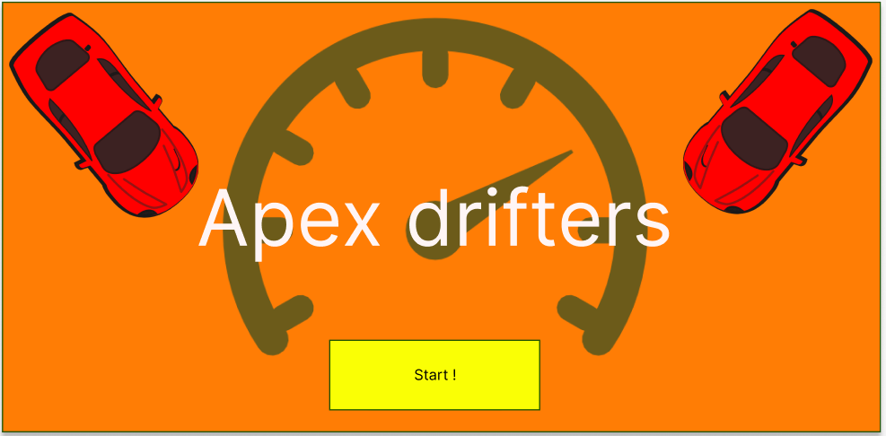
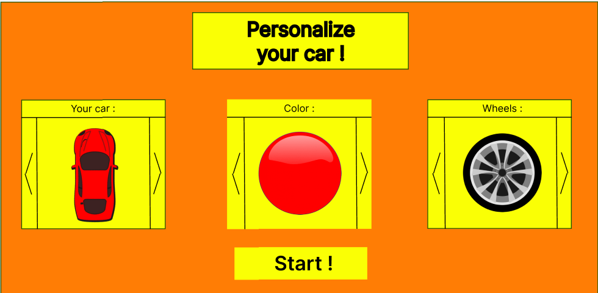
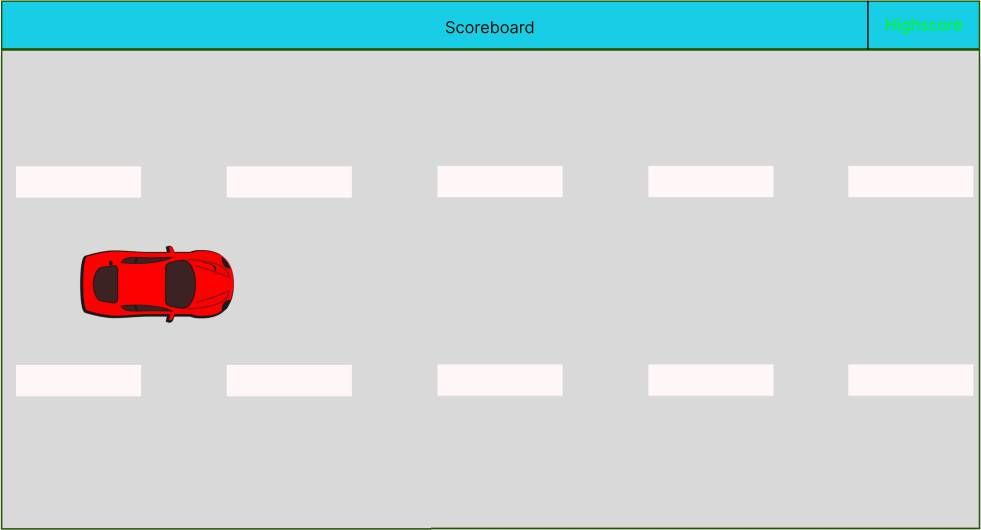
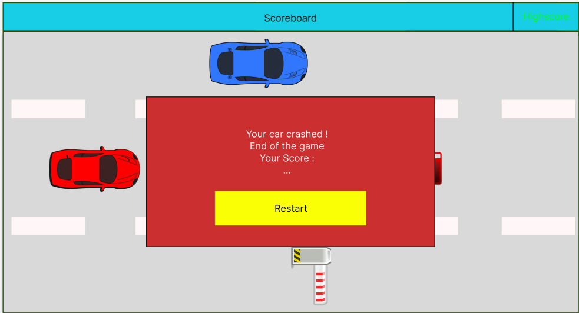

Here you are in the Mockup page!
By Adrien Alber, 04/11/2024 at 10:00
Let's start with the home page. We wanted an attractive homepage, so that the player would show an interest in playing our game. So we decided to use bright colors, maybe like a little bit "retro". Therefore, the simplicity of the information will help the player not to get distracted and to be able to play without any difficulty.
There is the mockup for our homepage. the cars and the speedometer immerse us directly into the world of our game. The "Start" button will allow the user to move on to the next step.
On this page, you can choose any elements of your vehicle; the model of the car, his color and also his wheels. The button "start" will start the game.
You can see now the Board game. It is designed to remind the player of reality. His car is red and will be red all along the mockup. You can also see the scoreboard and the highscore.
The picture represent our Game board with some of his obstacles, like other cars and barriers, but also have the icon fuel so as not to break down.

The last but not least, the end of the game. When you break down or you have hit too many objects, the game ended. This will display a window with the score made, and a button to directly start a new game.
